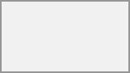

After you join a call, you will see the call view. It shows the video feeds of all participants currently in the call, with additional information and controls.
The leftmost element shows the elapsed call time.
Next to it, you will see the number of participants that have joined the current call. Clicking the number opens the right sidebar and shows the list of participants. Participants that have joined the call will be listed first.
You will also see each participant's talking time if they have spoken during the call:

You can access additional call options and settings from the three-dot menu in the top bar.
Breakout rooms allow you to divide a call into smaller groups for more focused discussions. Depending on your permissions and how your instance is configured, this option may not be available to you. For more information, see
You can download the list of participants in a call from the three-dot menu in the top bar. This downloads a CSV file with the names and email addresses of all participants.
The CSV file contains the following columns:
Name: The name of the participant.
Email: The email address of the participant.
Type: Indicates whether the participant is a registered user or a guest.
Identifier: Unique identifier for the participant.
Bottom bar of the call view offers media controls, layout settings and other features you can use during a call.
Use the microphone and camera icons to mute/unmute your microphone and enable/disable your camera. You can also use the keyboard shortcuts M to mute/unmute your microphone and V to enable/disable your camera. Use Space for push-to-talk: holding space temporarily unmutes you while muted, or temporarily mutes you while unmuted.
The reactions button lets you send an emoji reaction to all participants in the call.
Every participant will see the emoji rising from the bottom of their call screen. The emoji disappears after two seconds.
Clicking Raise hand will notify moderators and show an icon next to your name. This is also available via the keyboard shortcut R.
Resizes your browser window or the Talk Desktop client to full-screen mode. Also available via the keyboard shortcut F. Press Esc to return to the regular view.